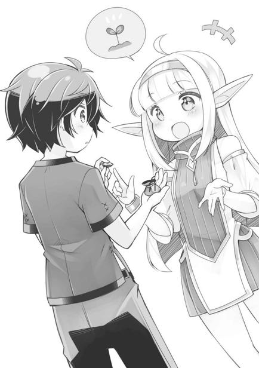
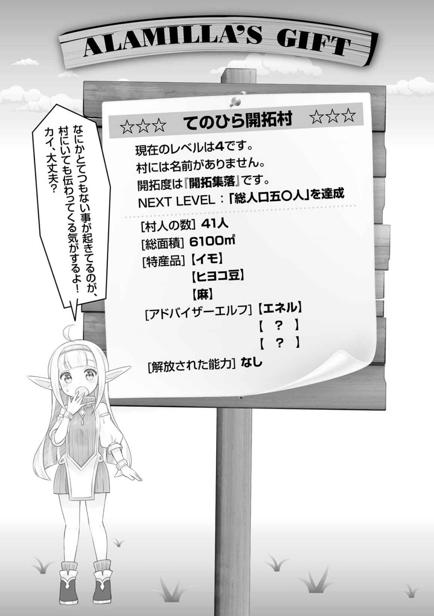

第一章
さて、俺こと『カイ・ハスクバーナ』は元日本人の転生者だ。
転生者と言い切るからには当然、前世の記憶がある。
元の名前は……今更どうでもいいだろう。日本生まれ日本育ちの生粋なる日本人だった。
ただ、生まれつき病弱で二十歳まで生きられなかった。
友達もほとんどおらず、家でも病院でもゲームばかりをやって過ごした。
ゲームは好きだった。特に箱庭ゲームと言われるような、街や村を作っていく育成シミュレーションはかなりやりこんだほうだろう。コツコツと街を成長させていき、最後には理想の街が完成する。狭い病室でベッドに横たわりながら、その理想の街で暮らす夢想をよくしたものだ。俺は時に町長で、時に農家で、時に入植者で、時に冒険者だった。
余命を宣告されてからは、現実を忘れるため余計にのめりこんだ。もう病気に打ち勝とうという気持ちはなかったし、ゲーム以外にやりたいことなどなかった。
そんな人間だったから両親には迷惑をかけた。否、迷惑しかなかった。ただ死ぬ為に産まれたような人生だった。
最後の記憶は…………死の間際。どこかホッとした表情の両親。
別に、誰が悪いということじゃない。前世はそういう人生だったというだけだ。
──だが、ハッキリ言って悔いの残る、残りまくった人生だった。
だからこそ、もし二度目の人生があるのならば、悔いの残らない生き方をしようと、眠りにつく時に誓った。今生の分まで、幸せを手に入れてやろう、と。
そんな俺の、この世界での最初の記憶は凍えるような寒さだった。
俺は孤児で、妹と共に道ばたに捨てられていた。それを拾い助けてくれたのが、俺たちの父親となる人物で、彼は神官だった。俺の名前であるカイも、妹の名前であるルキアも親父が名付けた。どちらも有名な聖人の名前だという。
俺といっしょに拾われたルキアは本当の兄妹ではなく、偶然いっしょに捨てられていたにすぎない。これは親父も知らないことだ。もちろん、俺のような転生者でもなかった。
とにかく、夢に描いていた第二の人生。それも健康な身体での転生だ。
俺はこの世界での人生を、精一杯に生き満喫することに決めた。
拾われて最初の一年は、まず言葉を覚えることを第一目標とした。言葉がわからなければ、この世界のことも何もわからない。
父親となった神官の書斎にコッソリと入っては、手当たり次第に本を読みあさり（最初は当然なにも読めなかったが）、メモをとったりしながら言葉を覚えていった。必死の学習により、たった一年でほぼ完璧に言葉を習得することができた。
言葉を覚えてからは、時々は親父に連れられて街を歩き異文化に触れた。
そうして確信した。この世界は「異世界」であると。
日の長さは同じだが、星の配置がまったく違うし、衛星──この星の月は三つもある。
俺が住む街は、ラベルダ王国というそこそこ大きな国の中堅都市で、文明の程度はそれほど高くないが意外と生活はしやすかった。電気もガスもないのだが、案外それでも暮らしに支障が出ることはない。
食べ物は美味しいし、気候も比較的安定している為か木とレンガと土でできた家でも存外住みやすい。街の人々は基本的に温厚で、教育の度合いもそれなりに高い。魔物も存在するようだが、街の近くにはほとんどいなかった。
だが、そこまでなら「異世界」というよりは、「地球以外の惑星」でしかない。
一番の異世界的な要素。なんと驚くべきことに、この世界には魔法があったのだ！
この世界の大気中には、魔力と呼ばれる不思議なものが漂っており、それを力として扱える存在を魔法使いと呼んでいるのである。
それを知った俺は、狂喜乱舞して魔法の特訓を試みたものだが、残念ながら俺と妹であるルキアには魔力を扱う才能がなかった。あまりの絶望に年甲斐もなく（精神年齢二十歳）泣いて、二歳の妹にいい子いい子と慰められる始末。
正直凄くがっかりしたが、ダメなものはダメ。なんでも魔力感応能力は先天性のもので、それがない人間には絶対に使えないのだそうだ。
このままでは俺の新しい人生は地味なものになってしまう……。
そんなことを考えていたのだが、しばらくして左胸のあたりに不思議なアザができた。
この世界で魔法と対をなす神の奇跡。「聖印」の発現である。
──それは、拾われてから二年目の夏の日のことだった。
その日、俺がいつものように妹を風呂に入れていると、妹の左胸に大きめのアザのようなものが出来ていた。それは書きかけの絵のように、歪な形でよく目立った。
本からこの世界の知識を仕入れていた俺は、それが聖印だとすぐに気がついた。
聖印とは、この世界にいるとされる十三の神々の誰かが、その個人に『祝福』を授けたという証となるものだ。祝福された個人は、神から特殊な能力を授けられ行使することができるようになる。その能力は極めて限定的で汎用性は低いものの、魔法にはできないような奇跡を起こすことが可能。神の種類によって発現する能力も違い一様ではない。
例えば、代表的な神である「癒やしの神」の祝福を授かったなら、能力によるケガの治療が可能であったりする。それは破壊に特化した「魔法」では到底なしえない奇跡だ。そんな神々の祝福の印が、妹に発現したのだ。興奮しないはずがない。
妹に顕れたソレが聖印の兆候だとすぐに気付いた俺は、裸のままで親父を呼びにいった。そして、その時に指摘されて、自分にも同じ「おしるし」が出ていることを知ったのだった。聖印を発現する確率は百人に一人程度のもので、しかも完全にランダム。血筋も性別も関係なく、無作為に選ばれる。兄妹で共に聖印が発現するなんて確率的にはほとんどありえない事で、その日、俺と妹と親父の家族三人でささやかなパーティーをして祝った。
親父の奥さんは俺たちを引き取る前に病気で早世。親父は再婚もせずに、俺たちを拾って一人で面倒を見てくれている。そんな親父が奇跡だ！と叫び、俺たち二人を抱きしめ、本当に嬉しそうにしているのを見て、「聖印」を授かることができて本当に良かったと、俺はまだ見ぬ神に感謝した。
聖印を持った子どもは十二歳の時に、神殿にて祝福の儀式を受ける。そして、儀式を終えた者は神官見習いとして、主神ファーレーを祭るファーレー教の神殿で働くことができるのだ。神官は給料が良い。俺と妹が二人とも神官になれば、親父にお返しができる。
なにより、俺たちを救ってくれた親父も「祝福者」でファーレー教の神官だ。これはとびきりの親孝行になると思えた。
そうでなくても、俺には親父に命を救ってもらった義理がある。
あのお人好しは、そんなこと気にもしていないかもしれないが、俺と妹は拾ってもらえなければ、あのまま死んでいただろう。
俺にとって、初めての親孝行だ。
……なにせ、前世は親不孝のまま終わってしまったからな。
◇◆◆◆◇
それから七年経った。
俺も妹もようやく十歳。あと二年すれば祝福の儀式を受けて、晴れて神官見習いとして働くことができるというところまできた。
「だがあと二年もあるのか……」
俺はひとりきりの部屋で呟いた。
妹は学校へ行っていて不在。親父はいつも通り仕事。そして俺は、学校へ行かず自学自習の道へ進んでいた。学校で習う内容が人生二周目の俺には簡単すぎるので辞退したのだ。
地球の知識チートで生活を良くするなんてことも考えたが、この世界はニワカ知識でどうにかなるほど文明のない世界でもない。魔法と神様チートである祝福がダブルで存在しているから、むしろ一部は地球より発展しているくらいだ。例えば「癒やしの神」の祝福者は、現代医療でも為しえていない『体部位欠損』さえも復元可能だったりするのだ。
それでも、知識チートの練習にと、井戸にポンプでも取り付けてやろうかと考えたりもしたが、鋳造で手押しポンプを作るような金があるわけもなく、頓挫した。
もちろん、この七年間なにもしなかったわけでもない。むしろとても充実していた。なんといっても、この健康な体だ。ただ野山を駆け巡るだけでも幸せを感じられた。妹であるルキアも可愛かったし、小さな妹に勉強を教えるのは楽しかった。
だが、充実はしているものの単調な生活に、さすがに少し焦れてきたのは否めない。
「儀式まで二年……」
せっかくの異世界なのに、このままでいいのか。正直に言えば、もっと異世界ならではということをしてみたかった。
なんとなく左胸を見る。そこには聖印を隠すための聖布が貼られている。聖印は祝福を与える神の種類によってその形状が違うのだが、聖布でそれを隠すことになっているのだ。
この布は二年後の儀式の際に神官が剝がしてくれるらしいのだが、実はこれには「目隠し」以上の意味はない。
つまり、聖布が貼ってあるから祝福自体が得られなくなる……というわけではないのだ。
「……やってみるかな」
俺は立ち上がり、机の引き出しから一枚の紙を取り出した。
「理論上は可能なはずだ。そもそも俺って正確な年齢もよくわからないし、案外うまくいくかもしれない」
古ぼけてしわくちゃの紙には、この世界の神の名前が日本語で記されている。
──あれは拾われて一年経った春の頃だっただろうか。
文字通り「体は子ども心は大人」な俺は、この世界の知識を得る為に家にある本を毎日見つからないように読みあさっていた。そんなある日、父親の書棚である程度以上高位の神官しか見てはならない「神の名と聖印が図で記された本」を見つけ、その時にほとんどの神の名を日本語でメモしておいたのである。
ただ、片手落ちなことに神の名前しかメモしていなかった。当時は勉強目的で、まさか自分が「祝福者」になると思っていなかったから詳細なメモを取らなかったのだが、まさか今になって使うことになるとは。
神の名が記された本は、俺の異常な精神的成長の早さに気付いた親父が書斎に鍵をつけてしまったので、今はもう見ることができない。
「だが、名前だけわかってればなんとかなる」
俺は日本語で書かれたメモから、一人ずつ神の名を呼びかけてみることにした。
聖印さえ浮き出ていれば、あとは神の名を呼ぶだけで祝福を授かることができるはずだ。
名前がわかる神は──
サルース、ルークス、メディナ、ミスラ、ライン、レピオス、モールト、イデア、ルサーリィ、リスミー。この十神だ。
主神ファーレーの祝福は存在せず十三神には入らないので、三神足りない。本に載せられないほど機密性が高い神なのか、それとも単に名前がわかっていないのか。全員はわからなくても、これだけあればどれかに当たりそうなものだが……。
こうなったら出たとこ勝負。後は有用な能力を持った祝福を得られることを願うだけだ。
十三神の内、その能力も含めて広く一般に知られているのは『光の神ルークス』『真実の神イデア』、あとは『癒やしの神メディナ』の三神だ。そして、この三神は神殿にとって最もメジャーな神であり人気も高い。ただしルークスの能力は、祝福者自身が発光したり、光る球を出すというちょい地味なものだったりする。そして、うちの親父がそれの祝福者なのだ。前世の知識がなければ凄いと素直に感じられるのかもしれないが、癒やしの神の能力なんかと比べるとやっぱりどうしても見劣りしてしまう。
残りの十神の「能力」については神殿により堅く秘匿され、謎なままだ。
「とにかく試してみよう。いまさらジタバタしたって、もう何の神かは決まってるんだ」
答えは胸の聖印が知っている。
俺は一人でセルフ祝福の儀を開始した。儀式とはいっても名前を呼ぶだけなのだが。
────そして、十五分後。
「……ダメだ。なんの反応もない……セルフ儀式は失敗かぁ」
メモしておいたすべての神の名前を試してみたが、なんの反応もなかった。
聖印に手を置いて叫んでみたり、祈りを捧げてみたりと試したが、やはりなにも起こらなかった。
神の名前を知ってるだけではダメなのか？
きちんとした祝福の儀式に意味があるのかも？
それともメモしてない残りの三神のどれかの祝福……ということなのだろうか。
「やっぱり素直に二年待つしかないのか……」
とはいうが二年は長い。もうさっさと祝福を得てスキルの練習に時間を使いたいのだ。魔法もダメだったし、異世界ならではのことに時間を使いたい。ジョギングや筋トレも欠かさず行ってはいるが、いつまでもそれだけでは時間がもったいなく感じてしまう。
諦めきれなかった俺は、妹であるルキアにも神の名を呼ばせてみることにした。
聖布が貼られる前、まだ形がハッキリしていない頃にルキアの聖印を見たが、俺のものとは違う形だった記憶がある。
ルキアが名前のわかる十神の祝福を得ているなら、儀式が成功するかもしれない。
「でも、パパが神さまの名前は儀式までは呼んじゃダメって言ってたよ？」
「そうなんだけど、ルーも自分がなんの神様から祝福されたのか知りたいだろ？」
「うん、知りたい！でも、ルーちゃん神様の名前知らないし、ルークスは違ったみたいだから」
ルキアは光の神「ルークス」の祝福者になりたがっていたから、こっそり名前を呼んでみたのだろう。そもそも名前を呼べばいいだけなどという単純なシステムなのが悪い。うっかり儀式前に祝福を授かる事など日常茶飯事なのだ。もちろん名前が知れ渡っている神に限っての話ではあるが。
「じゃあ、兄ちゃんが知ってる神様だけ、試してみよう」
「うん！ルーちゃん神様呼んでみたい！」
勉強はできるのに、無邪気な性格の妹はうんと元気にうなずいた。
そして、一つずつ神の名前を呼ばせていき、三つめの神がヒットして、結果は大成功。
ルキアは真実の神『イデア』の祝福者だった。
ルキアがイデアと名前を呼ぶと、左胸に浮かび上がった聖印が一瞬輝き、頭に直接「神様の声」が聞こえてきたのだという。
「わ、わー？あんまり変わった感じしないけど、これでルーちゃん祝福者になったの？」
「たぶんね。スキルは使えそう？」
祝福者はその神に与えられた「固有の能力」を使えるようになる。
真実の神『イデア』の祝福者は、真実を見抜く能力を得るのだという。
ちょっと怖い感じがする能力だが、噓に引っかからないというのは、ちょっと抜けたところがある妹には良い能力であるのかもしれない。少なくとも悪い男に引っかかることはなくなるに違いない。
「お兄ちゃんに使えばいいの？」
「え？ああ……そうだな」
ルキアの祝福が成功したということは、やり方が違っていたわけではないということ。
イデアの能力ならば、俺の神の名前も見通せるのかもしれない。
「兄ちゃんの神さま、名前わかんないからさ、それがわかると助かる」
「うまくできるかわかんないけど、やってみるね！」
ルキアが握りこぶしを作って胸を張った。
能力の使い方は、神の声が聞こえた時に、なんとなくわかったのだという。
不思議なことだが、そもそも祝福自体が不思議なものなのだ。というか、神様っていったいなんなんだろうと考えてしまうこと自体が、元地球人独特の思考なのだろう。
ルキアが俺の手を握り瞳を閉じる。これが彼女のスキルの使い方らしい。
「じゃ、じゃあ、いくよ～。『真実の瞳』！」
ルキアの左胸が淡く光る。スキル使用時は聖印がボウッとわずかに輝くのだ。
スキルを使う時にスキル名を言わなきゃならないってのは、なんかちょっと恥ずかしいな。いや、これも元地球人的な発想か。
「お、おお～……！見えます、見えます！お兄ちゃんを祝福する神サマの名前は……『アラミラ』です！」
やっぱり聞いたことがない神だ。本にも載らないとは、それほど機密性が高い神なのか、それともただ単に忘れられたマイナー神なのかは現時点ではわからないが、とにかくこれで祝福を授かることができる。
「どう？ルーちゃん超有能？」
妹が、目を開けてドヤ顔を作って言う。
「うんうん。ルーは本当に立派だね」
「えへへ～♪」
頭を撫でてやると、妹はネコみたいに嬉しそうに目を細めた。
ルキアは俺のことを本当の兄だと信じており、こうして慕ってくれる。
それにしても、真実の神か──そうだ。
「な、なあルキア？そのイデアの能力ってどこまでわかるんだ、見た人のこと」
「うーん、それがね。お兄ちゃんのこと、よくわかんなかったの。神様の名前はわかったけど、あとはグチャグチャでよく見えなかったんだ。まだ慣れてないからなのかなぁ？」
「そっ、そうか。練習が必要なのかもな」
あぶない。場合によっては俺の正体や親父が養父であることまでバレてしまうかと危惧したが、妹の様子から見て噓をついている感じはしない。
俺が転生者だから見えなかったという可能性も考えたが、神の能力のことは良くわからない。いずれにせよ、いつかは知らなきゃならない時が来るのだろうし、その時までは身内相手にはスキルを使わせないようにさせれば問題ないだろう。
さて、では俺も儀式を試してみるとしよう。
アラミラなんていう、本にも出ていないマイナーな神の能力じゃあ、あんまり期待はできないだろうが、すべては使い方次第。元々、転生者ってだけでもアドバンテージは大きいのだ。どんな能力であろうと、俺がこの世界で生きる大きな力になるはずなのだ。
そして俺は、自らの神の名を呼びアラミラの祝福者となった。
この時、俺とルキアは十歳。本来儀式を受ける年齢よりも二年も早い。
バレたらヤバいので、この事は二人だけの秘密とした。
◇◆◆◆◇
『てのひら開拓村』
それが俺の能力名だった。
俺は『アラミラ』の名を呼び祝福を得た。どこからともなく荘厳なる女の声が脳内に響き渡り、スキルの名前が魂に刻み込まれ、同時に、それがどういう能力なのかを知った。
自分だけの村を一から開拓して育てる……などという、やはり聞いたこともない能力。転生者であることが変な風に作用したのか、あるいは、アラミラは異世界転生者専用の神で超絶マイナーなんて可能性もある。
そんな益体もないことを考えつつ、部屋で一人、俺はそのスキルを発動した。
「よし……やるか！てのひら開拓村！」
その名を告げて、一瞬──文字通り、一瞬きの間の出来事。
目の前の風景が、見慣れた子ども部屋ではなく、全く別の世界へと変貌していた。
空には太陽。雲一つ無い空。どこまでも続く草原。
少し離れたところに簡素な柵が見えているが、それ以外は見渡す限りなにもない。地平線の彼方まで、本当になんにもない世界に俺はいた。
文字通り、ここが「俺の（手のひらの）中にある開拓村」なのである。この広大な土地を自由に開拓できるというのだ。
（これが個人の持つ能力だってのか……？ファンタジーすぎんだろ……）
日差しの暖かさも、ほのかに香る草の香りも、「本物」としか言い様がないリアリティ。
光の神ルークスの祝福者である親父に、今よりずっと小さい頃にそのスキルを見せてもらったことがあるが、それは手のひらに光る玉を生み出す能力と、体を電飾人間みたいに光らせる能力だった。
俺はそれを見て「実に地味だな……」と感じてしまい、あまり憧れなかったものだが、それは現代日本人にとって「光」というものがありふれたもの過ぎたからであって、この世界的にはものすごいありがたい能力だったりしたわけだが──
それと比べると、俺の能力は……なにができるのかはわからないが、とりあえず規模だけは凄い。人生二度目の俺からしても奇跡としか形容できない異能だ。
（しかし、本当になんもないな……ん？）
なにもないと思いつつ周りを見渡したら、自分のすぐ後ろに立て札が立っていた。
それは、プラスティック製みたいな色艶で、ちょっとそこだけリアリティが薄く──
「３ＤＣＧなのかこれ？」
なにげなく触れようとすると、手がすり抜けた。ＳＦ映画で見るホログラム映像のように、触ることができない仕様らしく、ここだけやけにゲーム的だ。
「なになに──？」
立て札に書かれた文字を読む。
──────────────────────
☆☆☆てのひら開拓村へようこそ！☆☆☆
このまっさらな土地をどのようにコーディネイトしていくかはあなた次第！
思いつくまま、手当たり次第なんでもやってみよう！
現在のレベルは０です。
村には名前がありません。開拓度は『荒れ地』です。
ＮＥＸＴＬＥＶＥＬ：「初めての収穫」を達成
──────────────────────
と日本語で書かれてあった。
「マジかよ。完全にゲームだこれ……」
前世では、こういう村やら町を作る箱庭ゲームはかなり好きでやったものだけど、まさにそういう感じだ。
「というより、そのものか？」
この土地……『てのひら開拓村』は、開拓していけば村としてだんだん発展していくらしい。レベル０って──１からスタートじゃないのかよ！という思いもあるが、まだ村どころか、全くの未開拓の荒れ地だからなのだろう。
とにかく条件を満たしていけばレベルが上がっていくはずだ。
村を作るなんておかしな能力だが、最低限のルールは（それこそゲームの説明書ぐらいの内容だけ）、いつのまにか頭に入っている。妹も能力を使う時に「なぜかわかる」と言っていたから、神の恩寵とはそういうものなのだろう。
自分だけの開拓村ということは、自分の好きなように発展させられるということ。開拓村は俺がしたこと、持ち込んだものが影響を及ぼし合って発展していくらしい。
どこまで発展させられるのかは不明だが、できることからやっていこう。
「……とはいえ、どこから手をつければいいんだか」
これが転生者でなく、ただの十歳の小僧だったらお手上げになるのではないだろうか。いや、俺だって前世での知識がちょっとあるに過ぎず、実際に村を開拓した経験があるわけじゃない。なんたって、ただの学生（病弱）だったのだから。
（だが、神官見習いとして働くまで二年もあるし、のんびりやってみるか）
俺は早速、村の開拓に乗り出すことにした。
なんだかんだいって、やっと手に入れた異世界転生らしい展開にワクワクしていた。
まずは「初めての収穫」の達成からだ！
とは言っても、「村」はただの荒れ地で開拓に使えそうな物はなにもない。俺は道具を持ち込むため、一度家に戻ることにした。
村は、柵に覆われた範囲だけが『開拓村』で、柵の外に出るとスキルが解除されて現実世界へと戻ってこられる。肉体ごとスキル世界に入っているわけだから、人に見られると「いきなり現れた」とか「いきなり消えた」みたいに見えてしまう。だから、使う場所には注意が必要だろう。
村の外に出ることで能力を解除して自室に戻った俺は、貯金箱を開け将来のためにと貯めてあったこづかいを全部取り出した。
そのまま街の道具屋へ直行し、鉄製のクワを一本購入。
この世界では、鉄はまだそこそこ高級品であり、それだけで貯金をほとんど使ってしまったが、開墾には必須だから仕方がない。村の開拓を進めていけば鉄も手に入るかもしれないし先行投資というやつだ。
そのクワを持ってスキルを発動。開拓村へ移動する。
移動させたい物を持った状態（正確には触れた状態）でスキルを使えば、道具でもなんでも『開拓村』に持ち込むことができるようだ。
さあ、ひとりぼっちの開拓を始めよう！
「ほっ！よっ！せいっ！」
クワを振るって畑を作る。
開拓……と聞いて最初に浮かぶイメージは、とにかく何かを栽培することだ。
そうでなくても、立て札に「ＮＥＸＴＬＥＶＥＬ：『初めての収穫』を達成」とあった。これはまさに、開拓の指針と見て間違いないだろう。
やっと手に入れた能力だ、レベルアップするというなら狙わない手はない。
「ふっ！はっ！サクサクいくなこれ」
開拓村の土は軟らかく、十歳の子どもの力でも簡単に耕すことができた。
残ったこづかいで買ってきた種芋を植えて水を撒く。水はとりあえず家から水桶で運んでいるが、その度に行き来してたら面倒だし、誰かに見つかる危険もある。川でもあればいいのだが、見渡す限りの草原だ。川どころか生物の気配すら感じられない。
「いくらなんでも見晴らし良すぎだろう……」
はじめての収穫をクリアする為に、畑を作って耕すのはいいが、それだけじゃ村とは到底言えないだろう。現状、草と柵以外本当になにもないのだ。
では、村を構成する要素とはなんなのか。脳内説明書によると俺が運んだ物が『村』の世界に影響を及ぼすとある。
例えば雪を大量に運べば雪の世界に、砂を大量に運べば砂漠の世界になるということらしい。植生も同様で持ち込み植えた植物が繁殖するのだそうだ。ただ、基本的には人間が住める環境を作らなければ、大きな発展は望めそうにない。
まあ、極端なことをせず、自分が住みたい世界になるようにやればＯＫだろう。
そのために必要なものは多いが、外からなんでも持ってこられるわけでもない。街にないものも多いし、なによりお金がない。とはいえ、できる範囲でやってみようと思う。
その日は、ほんの家庭菜園程度の畑に、数えるほどの種芋を植えて作業を終えた。
というか、二時間経ったくらいで村から弾き出され、元の場所に戻されてしまった。中に入る回数に制限はないが、一日に滞在していられる時間には制限があるようだ。
村のレベルが上がればもっと滞在時間も増えるのだろうが、今は時間内で効率良く作業する方法を考えたほうがいいだろう。
次の日は、『開拓村』に持ち込む物を探すため、クワをかついで街の外に出てみた。
開拓村のほうは、土地を耕して種芋を植えたらもうやることがなくなった。こづかいも尽きたし、せいぜい水やりくらいしかやることがない。
俺が住む街は、ラベルダ王国でも指折りの都市ということだが、大都会ということは全然なく、街を出て少し歩けば手付かずの自然が残る場所がいくらでもある。
この世界には魔物……つまりモンスターもけっこういるらしいが、さすがにうちみたいな都市の近くにはいないので、出会ったことはない。
（さてさて、手当たり次第いってみようか）
人目のない林に入り、木材として使えそうな木の幼木を見つけては掘り起こし、開拓村へ移植する。木材は使い道が多い。村づくりの基本的資材になってくれるだろう。
石材も重要だ。街の近くには石切場があり、種類はよくわからないが白くて加工がしやすい石が削り出されている。交渉し少し分けてもらい、コッソリと開拓村へ運ぶ。本当ならタダでもらえるものではないのかもしれないが、さすがに十歳の子どもには甘い。触れるだけで運べるから、子どもの力でも問題なかった。
良い土もあったほうがいいだろう。クワで掘り返した土をどんどん運んでいく。土中の微生物などもまとめて村に移植してしまうつもりだ。腐葉土なんかも栄養があって良いとか聞いた記憶があった。
さらに野草、野花を見つけられる限り持って行く。さすが自然が豊かに残っているというか、野イチゴなんかも簡単に見つけられた。
「あと……ああ、あれがあった」
小さな葉が数枚集まり手のひらのように見える特徴的な葉──麻である。
現代日本では考えられないが、こっちでは似た植物がそこらへんに生えていて、生活にも利用されている。
「これを栽培することになるとはなぁ……」
麻は、繊維から布もロープも作れるし、種は食べられるし、確か油も取れたはずだ。麻薬的な効果の方はよく知らないが、実用品としては絶対に押さえておきたい。
見つけた麻の群生地で、何十本かを引っこ抜いて「開拓村」に植え替えた。
けっこう地道な作業なので妹に手伝って貰おうかと試してみたが、当然というべきか妹は「開拓村」に入れなかった。物や小さな虫などは村に入れられたが人間は無理なようだ。
だから、すべてを一人で行わなければならなかった。
暇な間に身体を鍛えておいてよかったと心から思う。
そんなことを、人目もはばからず何十日間も繰り返した。
運び込んだものがそのまま『開拓村』を形成する要素の一つとなって、ジワジワと村の様子が変化していく様を見るのは楽しかった。
やってることは外から見れば完全に変人のソレだっただろうが、そこは見た目が子どもで助かった。大人だったら不審者もいいところだっただろう。
学校に行っていないので、時間がたくさんあったのも幸いした。
毎日のように、外へ素材探しに出かけていたが、途中からは運び込んだ素材を使って村をコーディネイトしていく作業に没頭した。村の中でなら、自由に物の移動ができるのでゲームでカスタマイズするように畑や石などを配置していった。
その結果、村はすごい速度で外見を変化させていった。時間の流れが違うのか、それとも村の性質なのか。最初は、見渡す限りの草原だったものが、少しずつ植生を豊かにさせていくのは、村を育てるゲームというよりは、惑星開拓にも似た趣だった。
「うん、見違えたな！」
地道に開拓を続けて一年も経つころには、元はただのなにもない大地だった開拓村も、畑と野生植物がある、「これから村を作る土地」ぐらいには成長していた。
立て札の表記は一年で少しだけ変化した。
──────────────────────
☆☆☆開拓地までもう少し！☆☆☆
だんだん人が住める土地に近づいてきましたね！
開拓村まで、あと一息！頑張りましょう！
現在のレベルは０です。
村には名前がありません。開拓度は『未開地』です。
ＮＥＸＴＬＥＶＥＬ：「初めての収穫」を達成
──────────────────────
開拓が進むごとに、わずかずつだが柵も外側に広がっていっており、滞在できる時間も少しずつ伸びてきていた。わかりやすいようで、わかりにくい成長だ。
レベルが上がれば、もっとわかりやすい変化があるのかもしれない。
「……しかし、驚いたよなぁ」
つい独り言を呟いてしまう。
村の中……柵の内側に木を植えたり、石を持ち込んだりしたわけだが、徐々にその木々が村の外へ浸食していき、いつのまにか見渡す限りの草原だった『村の外』の一部が、植生の豊かな森へと変貌していた。脳内説明書にあった、運んだ物が『村』の世界に影響を及ぼすという一文の意味が、そのとき理解できたのだった。
特に嬉しい驚きだったのは、村の中に川ができたことだ。
最初は土を掘っただけだった。土の中にどれほどの水気があるのか知りたかったのだが、五十センチ掘っても湿った土が出てくるだけ。川になれと祈って何日もかけて溝を掘ったりしてみたが、さすがにそれだけでは川にはならなかった。
ターニングポイントだったのは、最初の種芋が全く根付かず、すべてダメになってしまった時だった。そのとき、もっと根本的な部分に気付いたのだ。
（この世界には雨がない）
雨がなければ川も存在しないし、植物も育ちにくい。当たり前のことだった。
だができることは昔ながらの雨乞いぐらいだ。というか、それ以外には知らない。
俺は街外れの河原で流木を大量に拾い集め、すべてを『開拓村』に運び野焼きを実践した。野焼きの煙が雨を呼ぶ。科学的に正しいのかどうかはわからないが俺はそれに賭けた。
はたしてそれは成功して、しばらく後に、村に雨が降った。
そして一週間後には、村の中に川ができていて、俺は小躍りせんばかりに喜んだ。
ただ、水質的に茶色く汚れた川だったので、濁らないように河原から大量に石を持ってきてバラまいておいたら、また一週間後には綺麗で澄んだ水に変わっていた。
そういった、変化を見つけながら村を育てるのは面白かった。
最初はマイナーな神に当たってしまったかと思ったが、今では最高の能力に当たったと確信している。アラミラ様々だ。
◇◆◆◆◇
「そろそろだな。ついに収穫第一号か」
村の開拓を始めて約一年。
ようやく村の畑に植えたイモから最初の収穫ができそうだった。
別になんてこともない、普通のイモである。だが、開拓村での大きな一歩なのは間違いなかった。少なくとも継続的にイモが収穫できれば食糧難の時に抜群の威力を発揮するだろう。そんな時が訪れるのかどうかはわからないが、ここは文明が十分に発達した世界じゃない。戦争だって前世と比べればずっと身近だ。
食料があるだけ幸福と思っていなければ。
……それから、さらに数日後。いよいよ収穫の時が訪れた。
「じゃあ、掘ってみるか……。ちゃんとできてりゃいいけど」
イモの出来も気になるが、収穫すればレベルが上がるはずだった。
そして、俺が手で土を掘り優しくイモを収穫した時、それは起きた。
［おめでとうございます！「初めての収穫」を達成しました！］
［おめでとうございます！てのひら開拓村のレベルが１に上がりました！］
［おめでとうございます！あなたの村の開拓度が『開拓地』になりました！］
脳内に響き渡る声。
村を覆っていた柵が、すごい勢いで数十メートル分遠ざかっていく。
早速、立て看板を確認すると──
──────────────────────
☆☆☆てのひら開拓村☆☆☆
開拓はまだまだ始まったばかり
どんな村になるのかは、あなた次第だ！
現在のレベルは１です。
村には名前がありません。開拓度は『開拓地』です。
ＮＥＸＴＬＥＶＥＬ：「総人口十人」を達成
──────────────────────
「うおおおおおお！レベルアップ！」
ついに開拓地になったぞ！って、まだ村じゃないのか……！
だけど、自分がやっていることが無駄じゃないとわかって、すごい達成感だ。
次なる目標は、総人口十名とのこと。どうやったら人が増えるのかは謎だが──
（まあ、いいや。さっそくイモを食べてみよう）
わからないことを思い悩むより、この能力世界で育ったイモがちゃんと食べられるのか、味がどうなのかを確かめるのが先だ。
「イーモ♪イーモ♪落ち葉で焼きイモ♪」
開拓村の中で薪を集め、収穫したイモを鼻歌交じりで焼いている時に、その変化は起きた。変化──というと少し語弊があるかもしれない。とにかく大変なことが起きた。
開拓村に人がやってきたのだ。
「やあ、おいしそうな匂いだ！私にもひとつくれないか？」
どこからやってきたのか、耳がニョッキリと長い金髪の美しい少女が、元気よく焼きイモを無心してきた。
懐かしい言葉。日本語でだ。
俺があっけにとられて、無言で焼きイモを渡すと、少女はアチアチと手の中で遊ばせてから、二つに割りパクパク食べ始めた。俺はそれをやはり無言で、半ばあっけにとられて見守る。……しかし、美味しそうに食べる子だ。
「おいしいっ！うーん、こんなにおいしいものは初めて食べた」
ただの焼きイモにしては過分な評価だ。
「まだありますから、どうぞどうぞ」
「えっ、いいのかい？じゃあ遠慮なく」
少女は長い笹穂型の耳をピコピコと動かして、二つ目のイモにも勢いよくかぶりついた。
（これ、エルフだよ……な……）
俺は少女の外見的特徴に見覚えがあった。生前やったゲームやマンガなんかで見たエルフという種族の特徴と合致する気がする。
しかし、開拓村ってんだから村人がいずれ来るとは思っていたが、こんな可愛い子が来てくれるとは想定外だ。ちょっと嬉しいぞ。日本語も懐かしくて胸に来た。
俺は少女がイモを食べ終わるタイミングで質問した。
「君は誰？どこから来たの？」
我ながらストレートな質問だが、そもそもここってどこなんだという疑問はずっと抱いていた。能力世界はどこにあるのかも謎だし、柵の向こうには行くことすらできないのだ。
「私の名前はエネル！出身はカイ、君だよ。お父さん！」
「へ？」
「だって、ここは正真正銘、君自身の世界なんだからね。私は君の開拓をサポートするために、君自身が生み出した村の管理人なのさ」
まさかの脳内フレンズだった。いやまあ、そりゃあひとりぼっちの農作業は辛いとは思ってたし、一人で全部やるの無理とこぼしたことも何度もあったけど……。
「だからこれからは、私が村の管理は代行するよ！君は外の世界から、いろいろ持ってきてくれれば、私がいい感じにやっておくからね！とりあえずは、食べ物の種がいいかな、できれば美味しいやつ！」
三つ目の焼きイモを頰張りながら、エネルが言う。
「あと、カイ。君にこれをあげるよ」
エネルから、ちいさな巾着袋を手渡される。
「なにこれ」
「中を見てごらん。それは創造の種。神の力の具現である種だよ。今はまだ一つしか生み出せないけど、この能力……開拓村が育てばまた種を生み出すことができる。頑張ろうって気になるだろう？」

創造の種とはまた大仰なものをもらってしまった。
開拓村がレベル１になったご褒美的なものなのだろう。
「なんの種なの？」
「それは私にもわからない。きっと君にとって必要なものが実るんじゃないかな」
「そっか」
その後、俺はその「創造の種」を開拓村の中に植えてみたのだが、数週間経っても何の芽も出さなかった。エネルに訊いてみたら、現実世界に植えるものなのだという。
しかし、なにが出るかわからないものを闇雲に植えるわけにもいかず（うちには庭がないのだ）、結局エネルに種は預けておくことにした。さしあたり困っていることはないし、正式な祝福の儀を受けて給料が入ったら、自分の土地なんかも買えるだろう。そしたら、なんでも好きなように植えられるのだから。
エネルが村に来てから、少しずつ村人が増え始めた。
村人というよりは、どこからともなくやってきた入植者という感じだ。服装も粗末で、ほとんど原始人のような見た目。俺は最低限の生活の知恵をエネルを通して村人に伝え、足りないものをできる範囲で補充していった。
村人たちは木を切り倒して（金属がないから石器だ！）粗末な小屋を作り、畑を耕しだした。畑仕事が終わると、土を乾かして原始的なレンガらしきものを作り家を補強していく。俺が大量に植えたからか、すっかり自生している麻の繊維から縄や布も作ろうとしているようだ。想像以上に、生活力がある村人たちである。
彼らが食べているものはイモばかりだ。野イチゴなんかも見つけてきて食べているようだが、主食はイモだ。というか、現状「収穫」まで成功している食料がイモだけだったから、「イモが主食の村」になっているのだろう。
村人がどんどん畑を増やすので村はイモ畑ばかりになっていった。
さすがに、イモだけというのも可哀想なので、おこづかいでヒヨコみたいな形の豆を一袋調達して、エネルに渡した。しばらくすればこれの栽培も始まるだろう。
川で捕まえた川エビと小魚も生きたままエネルに渡したので、近くこれも、村人たちの食卓を彩ることになるだろう。
しばらくすると、村人は麻の服を着るようになった。麻の実も副菜として食べているようで、同時に、麻を育てる畑も増えた。
エネルによると、なにもかもを村人に伝えなくても、村人たちは村にあるものを利用して勝手に生活するらしい。基本的には村人とエネルによってオートで開拓が進み、俺が持ち込んだ物や知識によって、村が変化、成長していくらしい。
俺はそんな村の成長がたまらなく嬉しく、楽しかった。村人には俺の姿が見えていないが、ちょっとした村長気分で村を散策するだけで新しい発見があった。
新しい村人が増えていたり、服におしゃれな刺繡や模様が描かれるようになったり、野イチゴを栽培しようと試みる村人が現れたりと、生きているようなリアルさがあった。
実際には、細かい部分は省略されているのだろう。天災も起きたことがないし、疫病だってない。畑からは何度でも同じ作物が収穫できる。良い意味でゲーム的な能力だった。
そうして毎日が過ぎ、村のレベルも順調にいくつかアップし、開拓村がなんとなく村と呼べる程度にまで育ってきた頃。
いよいよ、本当の祝福の儀の時が訪れた。
十歳でコッソリと祝福を得てから二年もの時間が経過していた。
◇◆◆◆◇
「お兄ちゃん、どーう？似合う？ルーちゃん完璧？」
「おお、可愛いぞ。こりゃあ本格的に変な虫の心配をする必要があるな」
「えっへへ～、ルーちゃん虫もだいすき！」
「そりゃ困る。俺も親父も泣くよ」
儀式当日。普段着ないような上等な服を着せられた俺とルキアは、親父に連れられて街で一番大きな神殿を訪れていた。
神殿は街には数カ所あって、親父が働いているところとは別の神殿だ。もちろん親父は儀式そのものには参加しない。あくまで参列者というか、付き添いの父兄扱いだ。
妹は普段着られないような、可愛い服にはしゃいでいる。
「これが終わったら私たち神官見習いになるんだねー。でも……ほんとに大丈夫かなぁ？」
「ま、大丈夫だろ」
すでに俺と妹は自分たちで祝福を得てしまっているからか、ルキアは少しだけ不安そうな顔だ。俺はそれを、バレたら笑って誤魔化そうと言って納得させた。実際、祝福なんて本当に名前を呼ぶだけで授かってしまう適当具合なのだ。特段、怒られるようなことでもない……はず。まして、ルキアは誰でも名前を知っているイデア神の祝福者だ。いくらでも誤魔化しが効くだろう。
祝福の儀の内容は至ってシンプルだ。
その年に十二歳になる「聖印」のある子どもが集められ、神官が一人ずつ聖印を確認し、神の名を告げる。子どもは、その神の名を復唱し神の祝福を授かる。そんな流れだ。
年に一回の儀式ではあるが、そこまで厳粛な雰囲気ではない。普通におしゃべりしたり、父兄が騒いだりと案外自由なもんである。
ただ、神の名前自体は秘匿されているため、儀式そのものは一人ずつ別室で行われる。俺は神殿の長椅子に座りソワソワと順番を待った。
こういうのは、わかっていてもなんとなく緊張するものだ。
「カイ・ハスクバーナ。入りなさい」
初老の神官に名前を呼ばれた。
「じゃあ行ってくる」
「次はきっと私だね。もし怒られたら、私の分まで怒られてきてね、お兄ちゃん」
「まあ、実際俺の差し金だからな……。ちゃんとルーの分まで怒られてくるよ」
そんな言葉をルキアと交わして、席を立つ。
部屋に入ると真ん中に本を持った高位神官がいて、見届け人なのか、壁際の椅子におかしな格好をした男が二人座っていた。真っ黒い服を着て、頭巾で顔をすっぽり覆い隠している。神殿関係者には違いないだろうが、今まで見たことがない連中だ。
「では聖布をいただこう」
神官が、俺にとってもうかなり長い付き合いになる胸の聖布に手をかざし、短い呪文を唱えた。布が淡く光りハラリと床に落ちる。
聖布があった左胸には、十年近い時間を掛けてハッキリと浮き出た聖印があった。左右対称のデザインでなかなかカッコイイ。
（へぇ、こんな形だったんだな）
神官が俺の聖印を瞬きもせず、ジッと見つめる。
ちょっとコソバユイ気分だ。そんなにジックリ見なくてもわかるだろうに。
それともすでに祝福を授かってしまっているのが、聖印からわかってしまうのだろうか。
俺は上手い誤魔化し方を頭の中でシミュレートし始めたが──どうも様子がおかしい。
「……どうかしましたか、神官さま？」
俺の胸の印を何度も確認し、手元の本のページをべらべらとめくる神官。まさか、アラミラは儀式を行うような神官ですら、知らないような神だったというのだろうか。
というか、なんで儀式を行う神官に「真実の神イデア」の祝福者を用意しないんだろう。うちの妹でも俺の神の名を看破したんだから、そのほうが確実だろうに。
（……嫌な予感がする。祝福の儀式なんて本来、流れ作業のようなもののはず──）
神官は焦った様子で何度も本を確認し、額に脂汗が滲んでいる。
そんな中、立ち上がったのは、壁際に待機していた覆面の黒服たちだった。
まるで喪服のように黒ずくめのその格好は、本来、文字通り祝福されるべき日である儀式に必要な人間とは思えない。
──そう。本来ならば、必要ない。
なにか、イレギュラーが発生したりしない限りは。
背中に冷たいものが伝う。
黒服が神官の肩を叩く。困惑する神官が小さく「審問官どの……」と呟いたのを俺は聞き逃さなかった。審問官……異端審問官ってやつか……？
神官を無遠慮に遠ざけた審問官は、ジロリと俺の聖印を確認し──
一言「邪神……」とだけ呟いた。
悪い予感は当たるもの。
俺は有無を言わさず拘束され、入ってきた場所とは別の扉から外に連れ出された。そして、外に待ち受けていた黒い馬車に力尽くで乗せられ、そのまま家族への別れの挨拶すらできぬほど唐突に、港に停泊していた大型船に乗せられてしまった。
そして、手足を縛られ、目隠しをされ、猿ぐつわまで嵌められ、なにもわからないまま狭い船室に放置された。一日に一回、祝福者が空腹を和らげるスキルをかけに部屋にあらわれる以外には誰も来ない。
（一体、なにが起きたんだ）
頭の中には異端審問官が呟いた「邪神」という言葉と、儀式を行う高位神官ですら「アラミラ」を知らなかったという事実がグルグルと回っていた。今、自分は魔女狩りの対象者のように扱われている。そう考えるのが、当然の論理的帰結というものだった。
（殺されるのか……？）
ちょいとイージーモードになってきたと余裕コイてたらコレだ。
猿ぐつわを嵌められた状態では、スキルを使うことができない。スキルは言葉に発して初めて発動する。スキルがなければ俺はただの子どもだ。
何もできず放置され続け、数日なのか数週間ぶりなのか。
俺は本当に久々に拘束を解かれ、部屋の外に出された。
船の外はただただ原始的な島だった。
いちおう今船がいる場所は船着き場のようになっているが、朽ち方からして、もう何十年も放置されているようにしか見えない。
無人島。正確には「無人島にしか見えない島」だ。
異端審問官は何も喋らず、棒で小突いて俺を降りるよう促すと、そのまま船は俺を置き去りにして、なんの躊躇いもなく、むしろ焦るように出港していく。
（マジかよ……。なにこの展開……）
なんの準備もない。なにもかもが唐突。
二度目の人生、いきなり難所が到来してしまった。
さすがの俺も、無人島サバイバル編があるとは夢にも思ってなかったよ……。
